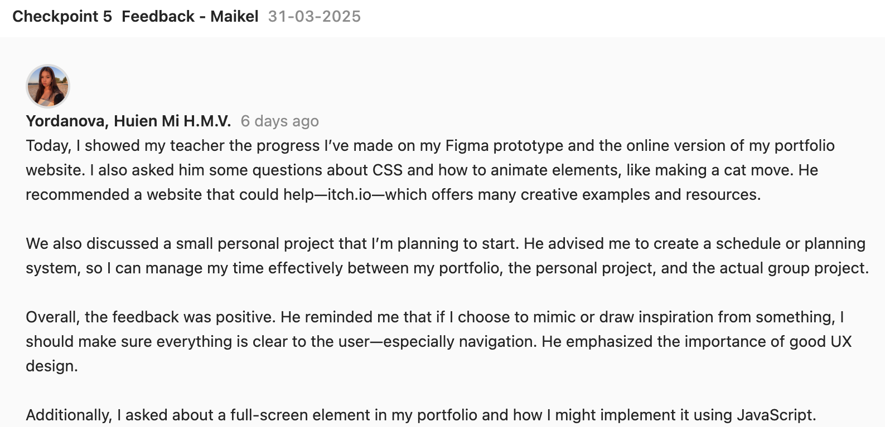
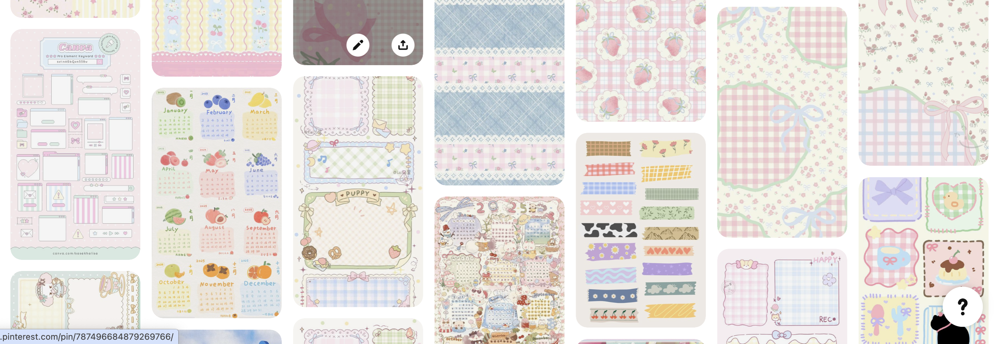
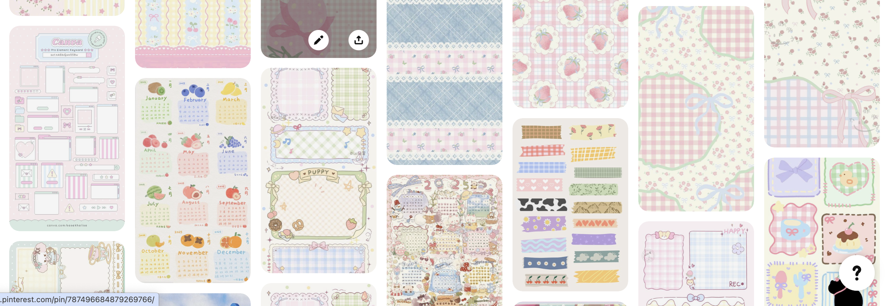

Website for Design Zest
I decided to do a qucik website for our group and because most of the members don't like coding i decided that I will make it and they will get the designing part or documentation. First i started looking at Media companies and get inspiration and ideas from them, most of them had really creative design and also had a lot of clients and designs made for them but because we didn't have client and a lot of work i decided to go with a simple layout of our work till this semster. I also saw a lot of animations with mastery area showing what they provide and how they work also I saw from tik tok 3D image gallery and decided to show our posters made for our group and for the landing page I wanted to do animation logo on the top bar so it will be more interactive
For competitive analysis I took all the ideas from different websites and was thinking how to put it in the group's website so that we can present it and all the needed information will be there, First I made a list of what will one website need for a media company and i putted things like our work, posters, methods, structure of our work etc. and later decided to search from these websites that I liked the most how they designed it. I circled with red everything I liked and implemented it into the website
To code the mastery area was hard because the website that I got the idea from made it with animations etc. but i am still not really proficient with animation so I was trying to find a way to play with CSS and JS I also asked for help one of my friends that are good with JS and then i tried to do most of the part alone but I also had help from AI. The landing page animation was not made by me but everything else was coded by me, with every step I asked my teammates if they agree with the design and changes I make and also the inspiration I got from multiple websites for media companies, I tried to recreate some eZects (the circles sections) that originally was made with animations etc. and I wasn’t able to do it so I decided to recreate it with CSS keyframes and JS, also another interactive thing is the image gallery that is a 3d slider gallery where all of our posters are there. The website with the commits is in GitHub where everyone with the link can see it.
I had a very positive feedback and the teacher suggested to mimic the animation and make it my own for example the mastery are to be a zest ares and make the circle look like a lemon so I decided to continue develop the website through the project. We also had a feedback when we presented to make sure put a mockup email or pay attention on the details because I putted email names "info@designzest.com" and it didn't exist

Portfolio
My portfolio I want to have more playful and creative design, i really like pastel colours, recently Ive got really into labubus and mystery boxes also i have always love hello kitty and all the ohter charactes, but I also wanted my design to show the educational part also as long with technology theme. That's why I decided to do a research and get inspirations on a portfolio with e desktop design and I saw a lot actually and saved all the pictures and designs I like.


For the designing part I had so much inspirations that i didn't know with what to go, but my first choice was more retro theme design and I was making in photoshp customize folders and icons and then made the first page with a vibe of "old computer" but then I didn't know how I will exactly show my learning outcomes and was searching of a way, i also wanted my now design to be more different than my previous ones. So finally I got the idea to mimic Canvas, Canvas has a good structure and after visualizing it I thought it will be a good idea. i start looking for colours and at the end I decided to go with pink (cherry blossom wise) as its an asian tree. I wanted to mimic it not so exactly but then i received a feedback from Mikael.Canva prototype
The feedback says that if i mimic something i need to really make sure the user know how to use it if i make it too complicated my teachers might dont know exactly how it works because they will see its canvas theme and will think it will work exactly like canvas. So I changed my prototype and decided to make it look more like canvas.

My gitlab link -> Click here
Personal Project
I’ve decided to start a small personal project inspired by Tamagotchi, but with a different purpose and features tailored for people like me—and my team at Takumi.
One day, we had a conversation about burnout—from university, work, and the constant stress of thinking about the future. As international students in the Netherlands, we often feel alone. We're trying to save money, stay on top of studies, and keep everything together. But sometimes, all that pressure leads to overthinking, burnout, and losing focus on university or life in general.


 

I created a survey so i can better understand my target audience. With this survey my goals are to understand the reason of their current state, to see if they take any actions and if they do why the other tools doesn't help them and what will possibly motivate them. With this questions I also added a few for the app choices and what to input there that will make them more happy and will make the app usable for the purpose reason. For the next weeks I plan to gather all the responses and make a report of the survey. Click here for survey
This app will feature a virtual companion—a modern Tamagotchi—that mirror you. It lives alongside you and reacts to how you manage your day. • If you miss a task, skip a meal, or don’t study, your Tamagotchi will show signs of being sad, unmotivated, or tired. It might let out a small "aghhh" sound of disappointment. • If you complete tasks, eat well, or take care of yourself, your Tamagotchi will cheer up and get a little sweet treat or reward. The app promotes emotional awareness and balance, not just productivity.
I did make some Canva page- prototype and started coding it because I never worked with apps so I wanted to see how long it will take me how it will be what I need etc. Once I got the idea, I started with defining and made survey for the target audience, brainstorming. After that I started making the prototype (not finished) by first making a user flow, Ui sheet. I looked for inspirations and got many from Pinterest.I started with gathering ideas and get more material for my small projects which will be "self care pet" by having a pet that you need to take care of and will basically mirror you and your mental health. Click here for canva prototype/a>


Because I never made an app I wanted to code first something simple so i started on my research of what to use. I saw that Expo Go is used and later you can deploy the app also I asked Stan if its a good idea to use it and he said yes. So I started following a youtube tutorial on hot to set up and had to download some packages in my terminal but I finally succeded. i had problems of course but I also used Ai to help me see where is the problem and how to fix it.
In my app, I first set a background image using the ImageBackground component to create a cozy and consistent visual environment. Then, I added a top-left stats panel showing the pet's level, experience (EXP), and energy. This is handled with a View styled with absolute positioning and updated dynamically using state variables like level, exp, and energy.
Below that, I created a set of interactive buttons (TouchableOpacity) that let the user wash the pet, switch between a cat and a dog, and open a shop. Each button updates the state (mood, isDog, showShop) to change the display or trigger animations.
When the user taps the Shop button, a sliding animation reveals the shop using the Animated API and a slideAnim value. Inside the shop, I used a ScrollView and a custom grid layout to display animated food items. Each item is an Animated.View wrapped in a TouchableOpacity.
When the user taps a food item:
An animation is triggered (fading out and scaling up briefly).
The app reduces the pet's energy by 1 (setEnergy).
It also increases EXP by 5, and if EXP reaches 20, the app levels up the pet using a calculation (Math.floor(totalExp / 20)) and resets the remaining EXP.
For energy tracking, I used an array to render ⚡ icons, and dimmed them when energy is low by changing the opacity. There's also a "Refill Energy" button to restore energy to the maximum.
Lastly, I made sure that user progress is saved even when the app is closed or refreshed. I used AsyncStorage to persist the level, exp, and energy. On app load (useEffect), I retrieve the stored values, and whenever they change, I save the new values back to storage.